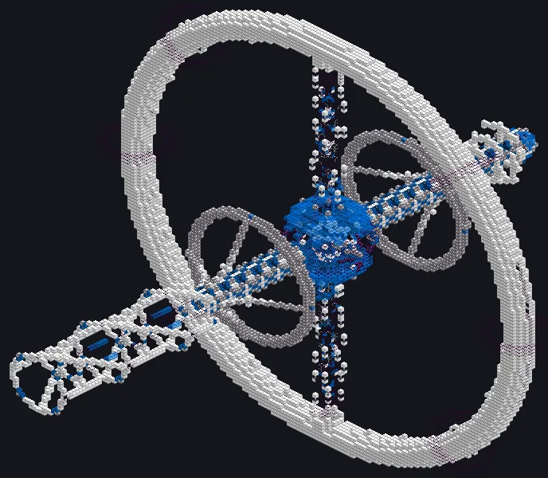
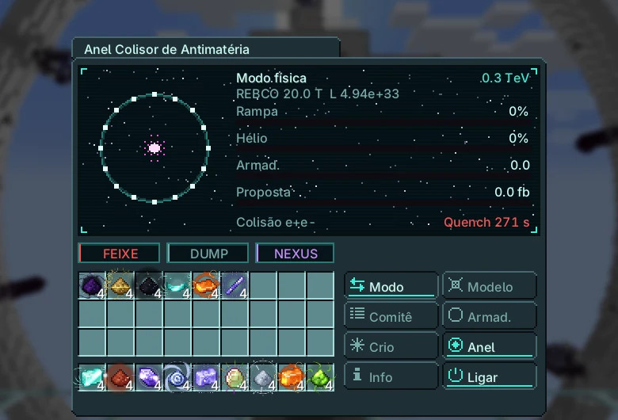
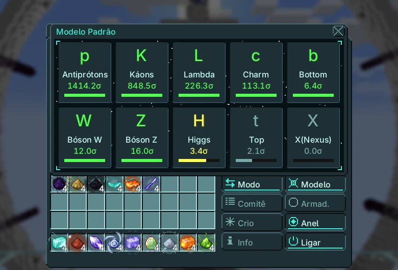
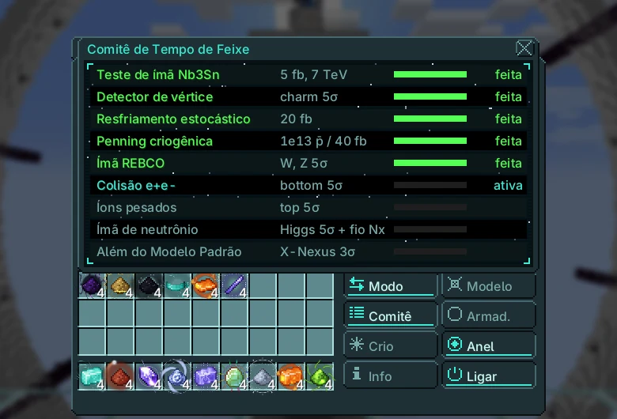

Anel Colisor de Antimatéria¶

Acelera dois feixes em sentidos opostos num anel de 3 km e os colide. O modo produção gera partículas exóticas e antiprótons; o modo física acumula luminosidade para descobrir partículas e cumprir as propostas do comitê.
| Tier | UIV |
| Tamanho | 155 × 127 × 137 |
| Energia | rede Nexus do dono (ímãs e armadilhas) |
| Fluido | hélio líquido |
| Controlador | Linha de Montagem (UIV), pesquisa no Emissor UIV |
| Blocos | página do catálogo |
Estrutura e hatches¶
| Hatch | Máx. | Uso |
|---|---|---|
| Hatch de Entrada | 4 | hélio líquido |
| Barramento de Entrada | 2 | fio fino de Nexium (proposta do ímã de Neutrônio) |
| Barramento de Saída | 4 | partículas, Células de Penning de Antiprótons |
| Hatch de Detector de Colisões | 1 | obrigatório para gravar corridas de física |
| Descarte de Feixe | 1 | corta pela metade a recuperação do quench |
Em operação, os blocos do anel e do giroscópio entram no controlador e são desenhados em movimento; voltam quando a máquina para.
Modos¶
Clique na linha do modo para trocar. Produção: partículas com rendimento de 10% antes de evidência, 40% em 3σ e 100% após a descoberta em 5σ; antiprótons enchem as armadilhas e saem como Antiproton Penning Cells (1e11 cada).
Física: a luminosidade integrada aumenta a significância de cada partícula e avança a proposta ativa.
O anel sobe em 20 s a partir de 150 GeV. A luminosidade base é \(3{,}16 \times 10^{32}\) cm⁻²s⁻¹ (0,03 fb⁻¹/s); com resfriamento estocástico e detector de vértice, \(4{,}94 \times 10^{33}\) (0,49 fb⁻¹/s). Rendimento da produção: 10% antes de 3σ, 40% a partir de 3σ, 100% a partir de 5σ.
| Ímã | B (T) | Feixe máx. (TeV) | Manutenção (EU/t) | Hélio líquido (L/s) | Pausa do quench |
|---|---|---|---|---|---|
| NbTi | 8,3 | 7,47 | \(2^{33}\) | 0,5 (0,3) | 60 s |
| Nb₃Sn | 12 | 10,8 | \(2^{34}\) | 1 (0,6) | 120 s |
| REBCO | 20 | 18 | \(2^{35}\) | 2 (1,2) | 180 s |
| Neutronium | 45 | 40,5 | \(2^{36}\) | 4 (2,4) | 240 s |
| Infinity | 120 | 108 | \(2^{37}\) | 8 (4,8) | 300 s |
Hélio entre parênteses: depois da proposta de Penning criogênico. A pausa do quench dobra sem Beam Dump.
| Partícula | Limiar E_cm (GeV) | \(s\) | fb⁻¹ para 5σ | com vértice | horas na luminosidade base |
|---|---|---|---|---|---|
| Antiprótons | 5,6 | 50 | 0,01 | \(5{,}00 \times 10^{-3}\) | \(8{,}78 \times 10^{-5}\) |
| Káons | 1 | 30 | 0,03 | 0,01 | \(2{,}44 \times 10^{-4}\) |
| Lambda | 2,5 | 8 | 0,39 | 0,2 | \(3{,}43 \times 10^{-3}\) |
| Charm | 10 | 4 | 1,56 | 0,78 | 0,01 |
| Bottom | 40 | 1,5 | 11,11 | 5,56 | 0,1 |
| Bóson W | 161 | 0,6 | 69,44 | 34,72 | 0,61 |
| Bóson Z | 182 | 0,8 | 39,06 | 19,53 | 0,34 |
| Higgs | 250 | 0,08 | 3.906 | 1.953 | 34,29 |
| Top | 346 | 0,15 | 1.111 | 555,56 | 9,75 |
| X(Nexus) | 4.800 | 0,02 | 62.500 | 31.250 | 548,68 |
O X-Nexus também precisa da proposta de íons pesados.
Energia e resfriamento¶
Menos hélio que a demanda causa quench nos ímãs: o feixe para por 60·(tier + 1) segundos.
Propostas do comitê¶
O comitê aprova uma proposta por vez, nesta ordem. As corridas de física avançam a proposta ativa.
| # | Proposta | Pede | Dá |
|---|---|---|---|
| 1 | Teste de ímã Nb3Sn | 5 fb⁻¹ entregues | ímã Nb₃Sn (12 T) |
| 2 | Detector de vértice | charm em 5σ | significância × √2, feixe de 16 µm |
| 3 | Resfriamento estocástico | 20 fb⁻¹ | 1.000 pacotes |
| 4 | Penning criogênica | 10¹³ antiprótons guardados ou 40 fb⁻¹ | armadilha tier 3, hélio × 0,6 |
| 5 | Ímã REBCO | W e Z em 5σ | ímã REBCO (20 T) |
| 6 | Colisão e+e- | bottom em 5σ | botão e+e− (feixes de elétrons) |
| 7 | Íons pesados | top em 5σ | íons pesados: X-Nexus pode ser produzido |
| 8 | Ímã de neutrônio | Higgs em 5σ + 1024 fios finos de Nexium | ímã de Neutrônio (45 T) |
| 9 | Além do Modelo Padrão | X-Nexus em 3σ | ímã Infinity (120 T) |
Se a manutenção das armadilhas não for paga, os antiprótons guardados aniquilam e danificam o anel. Abas laterais: quadro do Modelo Padrão e Comitê.
Feixes de elétrons. Depois da proposta e+e− o botão e+e− troca o anel para feixes de elétrons. A luz síncrotron limita cada feixe a 100 GeV (como no LEP): \(E_{\text{cm}} \le 200\) GeV, então W, Z, charm e bottom são alcançáveis, mas Higgs e top não. As colisões limpas contam em dobro nas corridas de física. Volte aos prótons para as partículas mais pesadas.
Endgame¶
Exclusivo: células de antipróton entram nas barras Cosmic Neutronium e Infinity e no sifão do Forge of Gods. Higgs e top: Lente Gravitacional. X-Nexus: controlador do Forge of Gods e âncoras profundas.
Precisa de: a proposta Ímã de Neutrônio só fecha com 1024 fios finos de Nexium nos barramentos de entrada; o fio é enrolado nos dipolos nível 4 quando ela fecha.
O Nexium vem da Lança Cinética Orbital (Nexus-1); a Fenda precisa do seu X-Nexus para passar da profundidade 40.
Telas¶
Telas do jogo na versão atual, em português.


